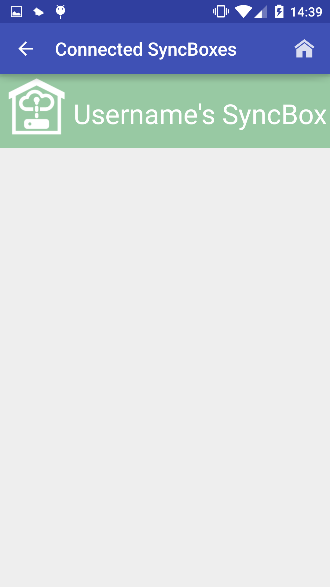
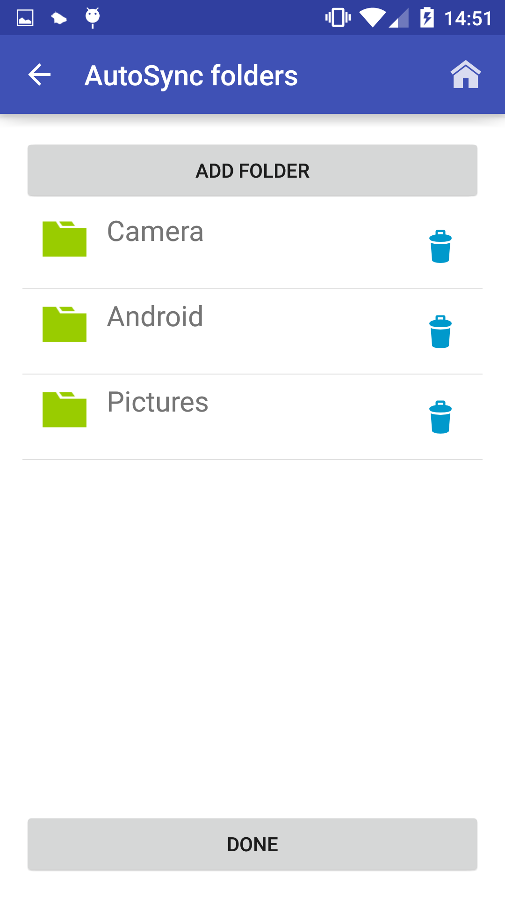

1. Set up SyncBox
How to set up your SyncBox for first use
- Remove the SyncBox from the packaging
- Insert the supplied usb power cable
- Plug the plug into a power supply
- Insert the supplied usb storage device into the usb port, (Note: you can also insert your own usb storage device!)
- That's it, your SyncBox is ready to sync!
2. Connect to SyncBox
How to connect your device to your SyncBox
- Open the AutoSync app on your device, the homescreen will be displayed
- Press the "New SyncBox" button, you will see a list of wireless routers currently active near your location
- Select "SyncBox" from the list. If you don't see "Syncbox" listed please refer to instructions for "Set up SyncBox"
- The app will ask you for the SyncBox's password, you will find this on a sticker on your SyncBox. Enter the password and click ok
- If the connection is successful you will be broight to the "Registration page"
- Enter the details the page requests and click "Done"
Note: the username will be the main folder on the usb drive that all of your content is stored in - The SyncBox will now register the entered details. You will be notified if the Sync was successful
- If successful you can enter the main menu for your new connection by pressing "My Syncbox's" on the "Homescreen" and selecting the username you just entered
3. Navigate to the synced device menu
How to get to a synced device menu
- After having connected a user(instructions available above) From the homescreen, Press the "My SyncBox's" button
- You will now see a list that will contain the username you set up. Select the username 
- You will now see the main menu for the selected username
4. Choose AutoSync Folders
The folders you choose here will be the folders that automatically upload to your SyncBox keeping you files nice and safe!
- Navigate to the synced device menu(instructions above)
- Click the "Folder Chooser" button, You will see the below screen
- To select a folder click the "Add folder" button
You will see a list of all the folders on your device like below - Click on the folder you would like to add to the automatic sync, you will see the list of files and subfolders that are in the selected folder.
- You can accept the selected folder by pressing the "Accept selection" button
Note: you can also click on the subfolders - After accepting a folder the folder name will be added to the list on the "Choose Folders" screen, an example is shown below 
- Press the "Done" button to save these folders as AutoSync folders
5. Perform a manual sync
You can perform a manual sync anytime if you want to make sure your files are up to date.
This will make sure the folders you have chosen in the folder chooser are backed up to the Pi.
Note: your device must be in range for this functionality
- Navigate to the synced device menu(instructions above)
- Click the "Sync Now" button, You will see the below screen
- The progress bar above indicates the folders upload status, you will be notified on completion
- You can use your phone as normal while the upload is in progress

6. Send a single file to your SyncBox
If you want to send a single file to your SyncBox follow the instructions below
Note: your device must be in range for this functionality
- Navigate to the synced device menu(instructions above)
- Click the "Upload file" button, you will see the file picker
- You can navigate through different folders by clicking on them
- Select the file you want to upload and press the "Accept selection" button
- The file will then be uploaded and you will be notifie when the upload is complete
7. Send a file to the shared folder
If you want to send a single file to your SyncBox's shared
folder so any other users of the SyncBox can access it then follow the instructions below
Note: your device must be in range for this functionality
- Navigate to the synced device menu(instructions above)
- Click the "Shared folder" button, you will see the file picker
- You can navigate through different folders by clicking on them
- Select the file you want to upload and press the "Accept selection" button
- The file will then be uploaded and you will be notifie when the upload is complete
8. Perform a cleanup
Performing a cleanup on the device will allow you to free up space on your device<>
You select the folder on your device you want to clean up, you then enter a date, any files in the selected folder older than the
date entered will be backed up on the SyncBox and removed from the mobile device.
Note: your device must be in range for this functionality
- Navigate to the synced device menu(instructions above)
- Click the "Cleanup device" button, you will be directed to the "cleanup device" screen
- To choose the folder to clean, press the "Choose folder" button
- The folder selection screen is shown, select a folder and press the "Accept selection" button
- After selecting the folder click the "calendar button" you will see the date selection tool
- Select a date by clicking on it, press the "ok" button to accept the selection, you will then be returned to the "Cleanup device" screen
- After selecting a folder and the date press the "Cleanup Now" button
- You will be shown the cleanups progress, on completion the number of files cleaned will be displayed
9. Perform a full automatic sync
When automatic sync is enabled syncing your files to the SyncBox couldn't be easier.
Once you have set up a user and chosen some AutoSync folders the automatic sync can be used. When your device connects to the
SyncBox when you enter it's signal range a notification will be sent to your device, you can then choose to perform a full automatic sync to the SyncBox
Note: your device must be in range for this functionality
- When your device detects a SyncBox in range a notification will be displayed, see below image
- You can dismiss the notification by swiping it
- Click the "Sync now" button on the notification to start the sync
- You will be shown the upload status. You can navigate away from the app while the sync is in progress